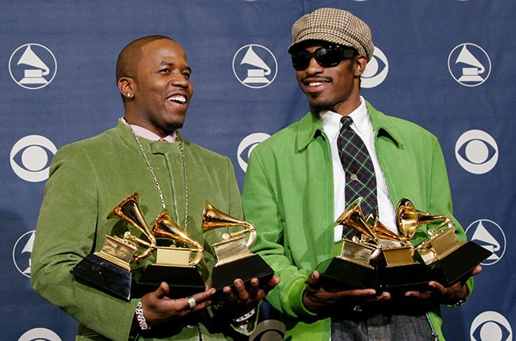

Antwan André Patton, aka Big Boi is an American rapper, songwriter, record producer and actor, best known for being a member of American hip-hop duo OutKast alongside André 3000. His most recent solo record, Boomiverse, was released in 2018. Here he discusses his work ethic, the value of hoarding all your ideas, and why openness and originality will always be the most important things.
An interview with musician and producer Big Boi on making the most of your time, always stockpiling your ideas, and why originality is key.
You have a reputation for being a tireless worker. Are you in the studio at this very moment?
"I’m in Atlanta, Georgia right now, at home. But yes, I just got back from the gym and I’m about to head over to the studio. This is business as usual for me. I’m heading out soon for what is the third—or is it the fourth?—leg of touring for my most recent record. Lots of things are happening. I now own all of my old masters and me and LA Reid are back together working… so, yes, always busy. Always working.""
Do you like being on the road? That’s a very different kind of work than being in the studio.
"Performing is actually my favorite part of the whole album-making process. You sit in the studio for a year to three years working on some music and imagining seeing the fans singing it back at you, word for word. Actually being out in the world experiencing that—waking up every day to a new city, new faces, new crowds, new energy—it’s a blessing."
I know some musicians who find being cooped up in the studio to be kind of torturous, whereas other people really love it and hate being on the road. Is there a part of the process that feels better to you?
Being in the studio writing songs can be both great and terrible. You’re like a gold miner looking for gold. It can be very tedious, but then you finally find that perfect sound and it’s so satisfying. Or you sit down with your pen and paper trying to figure out what the first line to this song is gonna be, just slicing into that cake of a verse. It can be incredibly time consuming, just you there wracking your brain and struggling to figure out what you’re trying to say. Once it’s all said and done and you’ve made something you feel good about, then all you wanna do is go out and play it for people. You wanna show it off. That’s why my favorite part is actually performing."
For someone who’s juggling multiple projects—both your own personal projects and projects with other people—how do you organize your creative life? Are you always working according to a tight schedule?
"Recording is truly a never-ending process. When I’m not on the road, I’m in the studio. I have my own studio and I’m there every single day. Even if I’m not working towards a specific deadline or working on a specific project, I try and keep a stash of music, vibes, and ideas that I can always come back to. You try to get all of your ideas down in some form, so when you have the time to sit down and finally try to put something together, you always have a lot to pull from. If you always keep adding to that stash of ideas, then you’re really never at a loss. There’s always something there to be worked on."
Has your working process in the studio changed a lot over the years? Do you have a pretty set way you like to go about doing things?
"When we first started we were working off tape machines and things like that, so it was very time consuming to record, because you had to record to tape. Now with Pro Tools it’s just so fast, that’s why you see these guys with Pro Tools set ups in their bathrooms and living rooms, because really you can cut anything at any time. So I guess that took a lot of time out of it. Recording itself has become easier and faster thanks to technology, but a lot of the time and hard work is really spent sitting at a desk writing. That’s the heaviest load of them all."
Someone once told me that every time they wrote a poem it was almost like reinventing the wheel each time… and that each time they sat down to do it, there was this slight twinge of fear that maybe they wouldn’t be able to do it again. Do you ever experience that?
"There’s definitely no fear, but the challenge is to reinvent and to evolve every time you make a song. Even after recording so many songs over the years, I still never want to sound the same way I sounded on an older record. That means you’re really trying to do something differently than you’ve done maybe hundreds or even a thousand times before. So to sound different, that’s the push, you know? I want to always try to discover my voice in a new way, and to say things differently.
I know there’s nothing new under the sun and I could easily sit down and mimic anything I’ve done in the past and just kind of cruise by that way, but that’s not how you find new things, that’s not how you tap into new territory, that’s not how you grow… and growing and changing is what I’ve always been about. It’s the big bang theory—boom!—you start from scratch. There’s always gonna be an awareness of what you’ve done before, but you can’t lean on that. You try to erase that out of your mind and start from scratch. That’s how you come up with new stuff, man. And that’s how I’ve been able to be here for 20+ years, because I don’t settle, I don’t conform, and I’m always trying to stretch and look for something else to do other than what I’ve already done."
One of the thing I always thought was cool about you, especially in the early days of OutKast, was that you were pulling from such a wide variety of influences. The sonic palette you guys were working from just seemed so much more broad than other people’s.
"Growing up, we were listening to all genres of music, and appreciating all kinds of artists. There are no boundaries, there are no lines that cannot be crossed, and there is nothing that you cannot experiment with. That gives you a lot of tools to make something special. Why be just locked into one category or genre? That didn’t make sense to me. I listened to everything from Kate Bush, to NWA, to Janis Joplin, to Neil Young, to the Pharcyde, Geto Boys, Bob Marley, I could go on and on. I mean, it just depends on how you feel that day. You absorb all of that stuff, and eventually those influences come out in the work in all kinds of different ways."
You’ve collaborated with all different kinds of people in a variety of different genres. Is there a kind of record that you’d like to make but still haven’t been able to? Or some kind of music that you still think, “Maybe I should try doing that?”
"I’m still trying to do some records with Kate Bush. That’s about it. I’ve worked with everybody under the sun, you know what I mean? Kate Bush is the only person I haven’t worked with that I wanna work with. Her and maybe Sade."
You’ve experienced tremendous success with OutKast. That kind of success—and the expectations it creates—can often play with people’s minds. Some might find that kind of success creatively stifling—as in, how can you possibly follow that?—but I could see how it could also be liberating. Having made one of the biggest pop songs of all time with “Hey Ya,” now you can basically just do whatever you want.
"Exactly, you hit the nail on the head exactly. I mean, after you’ve done it all, won Album of the Year at the Grammy’s, gathered up countless Grammy’s and AMA’s and MTV Moon Men, and BET awards, sold this many records worldwide, there’s really nothing else to prove. Right now music is recreational for me. I love it; it gives me life. And as long as people support me, I’m gonna keep on making it. But I don’t need to spend time thinking about how to top something I did in the past. That wouldn’t be healthy or productive."
How do you avoid letting that stuff trip up your creative process?
"Nothing gets tripped up. People can think whatever they want, but OutKast is a force, like Star Wars. OutKast is the force. And I’m just a Jedi that’s still learning, and still just making the best music possible and evolving as much as I can. More importantly, I’m just having fun at the same time and living life. We never got caught up by the pressures of what everyone else wanted from us. As a group we never wanted to be doing what everybody else was doing. Obviously we’re aware of what’s happening with music, but you don’t wanna be in those circles. You wanna create your own circle."
You mentioned how easy it is for people to set up their own mini studio in the bedroom, or the way technology has made it easier for people to make their own music and record it. For kids who are making music and trying to make a name for themselves, what advice do you have?
"Be original and stay true to yourself. Don’t be afraid to try new stuff. The more original you are, the more you’re gonna stand out. Pay attention to your craft, keep recording, keep writing, keep making beats. Don’t waste time. Make sure you put all your ideas down. Because if you have ideas like I do, a lot of times songs might come to me in the car or something, and I might use my voice notes in my phone to get it down—a certain line, a certain melody. Pay attention to your ideas, and store them up. Then you’ve always got this big bag of tricks you can pull from. That’s my advice—put all your ideas down somewhere, and be original."
You were saying that you don’t want to repeat yourself and it’d be easy to make a record that sounds like a record you’ve made before. Are you pretty quick to throw things away when they’re not working? Or are you a hoarder of ideas?
"No, I don’t throw anything away. Nothing. You never know when it might turn into something good later on. For example, with “The Way You Move,” I sat on that beat for five to seven years before I recorded it. You know what I mean? Today might not be the day, but you never know what it’s gonna sound like to you a month, or two years from now. So you don’t ever throw anything away."
You have a busy schedule through the end of this year with touring and collaborations and recording. How do you avoid burning out? Do you ever relax? Or do you prefer to just always be working?
"I really like to travel, so that doesn’t feel too much like work to me. And when I’m at home, I really do try to just enjoy it. But I’m always gonna find myself at the studio. I can’t sit still, really. I’ll rest later, but right now I’m just really primed up and ready to go. But relaxing is important, too. That’s what you’ve got Netflix for. I will binge watch things to my heart’s content. I’ve seen so many nature documentaries at this point that I might actually become a scientist. True crime? I can tell you who is locked up in Florida, who the bad police are in Detroit. Work is good, but you gotta feed your brain, too."
Big Boi reccommends: